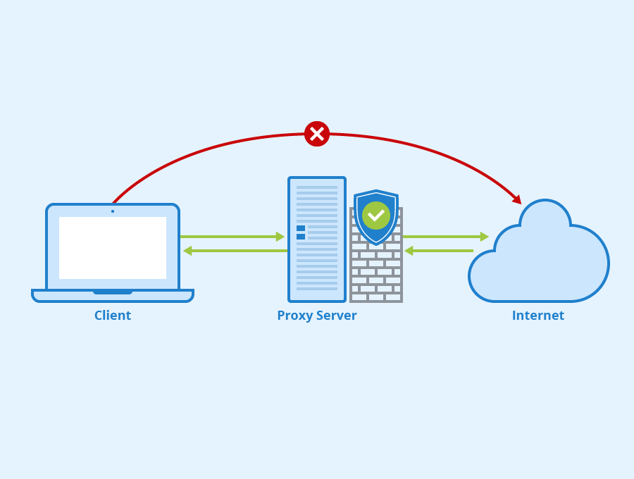
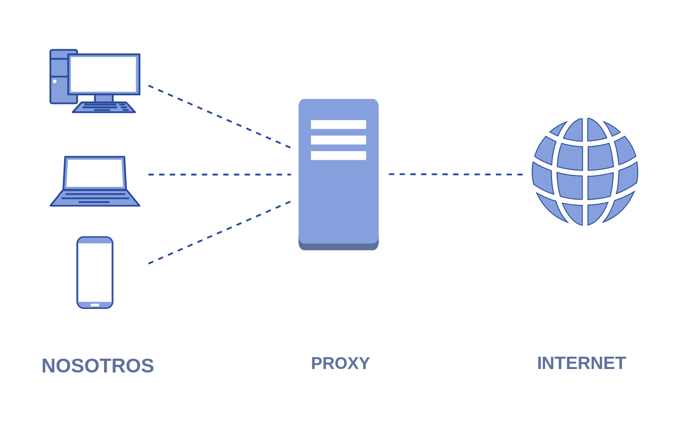
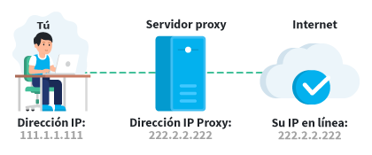

Un proxy, o servidor proxy, en una red informática, es un servidor (un programa o sistema informático), que sirve de intermediario en las peticiones de recursos que realiza un cliente (A) u otro servidor (C).
Por ejemplo, si una hipotética máquina A solicita un recurso a C, lo hará mediante una petición a B, que a su vez trasladará la petición a C; de esta forma C no sabrá que la petición procedió originalmente de A.
Está situacion estrategica de punto intermedio suele ser aprovechada para soportar una serie de funcionalidades: control de acceso, registro del tráfico, prohibir cierto tipo de tráfico, mejorar el rendimiento,
mantener el anonimato, proporcionar Caché web, etc; este último sirve para acelerar y mejorar la experiencia del usuario mediante permisos que guardara la web, esto se debe a que la próxima vez que se visiten
las páginas web no se extraerá información de la web si no que se recupera información de la caché.
Existen 3 tipos de proxy. El proxy de red, en el que dos agentes pueden interactuar entre ellos sin que se transmita la dirección de red real. Proxy dedicado, tiene efecto directo sobre la comunicación. Puede manipular,
filtrar o almacenar caché para su fácil acceso cuando se necesite. Para la transmisión de datos, el proxy puede leer y aplicar varios protocolos como http o ftp. Y por último el proxy de nivel de circuito, que se instala
en un cortafuegos. Funciona como filtro del tráfico desde puertos o direcciones específicas.

CARACTERISTICAS

Filtrado. Es una de las características principales de estos servidores. Permite realizar un filtrado, un bloqueo de sitios que son considerados maliciosos. Esto al ser configurable, las empresas por ejemplo utilizan los proxys para configurar accesos y bloquear el acceso a redes sociales. Aunque el objetivo principal es aumentar la seguridad de la red y del propio ordenador mediante este filtrado.
Autenticacion. Como ya dijimos, un proxy da seguridad dentro de la web y a que los usuarios no salgan de los sitios permitidos. Pero existe esta característica que permite que los usuarios puedan salir por recursos externos.
Almacenamiento de Logs. Gracias al log, tenemos en nuestro servidor proxy, todas y cada una de las páginas que los usuarios de la red visitaron. Esto no está al alcance del usuario, por lo que no se percata ni se preocupa.
Almacenamiento de Cache. Los servidores proxy almacenan datos en un caché. Esto permite que cuando alguien más ingrese al sitio, este pueda ser cargado de inmediato sin tener que realizar el llamado externo. Es una de las grandes características de un proxy.
Conexiones Compartidas. Una de las funciones de un proxy debidamente configurado es distribuir equitativamente las conexiones a internet. Esto quiere decir, que si alguien está descargando algo, no debería afectar a tu velocidad de internet.
Listas Negras. Allí se encuentran todos los sitios web a los cuales se los consideran malignos para la red. Es administrable y se puede sacar sitios de allí para su libre acceso. En los servidores de empresas, allí dentro están las redes sociales.
Control de Usuarios. Completa decisión sobre quién puede o no conectarse a la red. Si alguien quiere, tiene que solicitar el permiso para poder conectarse. Incluso si alguien consigue la contraseña de nuestra red, tiene que pasar por el proxy el cual le denegara el acceso.
VENTAJAS
Control: se limitan y restringen los permisos a los usuarios y se los otorgamos al intermediario (proxy).
Ahorro: le damos al proxy los recursos necesarios para hacer esa funcionalidad. Es el único que ha de estar preparado. Con esto nos referimos a la capacidad y lógica de cómputo o la IP.
Velocidad: guarda en el caché información para que cuando más de un usuario pida dicho recurso no tenga que volver a contactar con el destino.
Filtrado: si hay acciones o peticiones prohibidas automáticamente el proxy se niega a responder.
Modificacion: como intermediario, un proxy puede falsificar información, o modificarla siguiendo un algoritmo.
DESVENTAJAS
Como mencionamos anteriormente, el almacenamiento caché puede ser muy útil ya que si queremos ingresar a algún sitio que ya visitamos, se hará de forma mucho más rápida. Pero la realidad es que a la hora de navegar por la web al pasar por un intermediario podría ser bastante más lento.
Algunos servicios proxy prometen anonimato, pero podrían estar filtrando la información del usuario y poniéndolo en riesgo.
Al salir de un servidor proxy podríamos tener limitaciones a la hora de utilizar determinados puertos.
Así como podemos navegar en páginas web restringidas, ubicándonos a través de un servidor proxy en otro país, puede darse el efecto contrario y denegar el acceso por esta misma causa.